がおすすめするお料理とあうドリンク
ウィスキー
Whisky
アクセス ご予約等、お気軽にお問い合わせ下さい
18:00～20:00はお電話が繋がりにくくなっておりますので、ご了承くださいませ。
- TEL
- 06-6485-8828
- 住所
- 大阪市福島区福島1-2-17 meet Me 梅田西1階
- 営業時間
- 【ランチ】平日のみ。水曜、土日祝日はお休み。
- 11:30～14:00(L.O 13:30)
- 【ディナー】
- 17:00～23:30(L.O 23:00)
- 定休日
- 水曜日
- アクセス
- 環状線福島駅7分、東西線新福島3分、阪神本線福島駅4分、京阪中之島5分